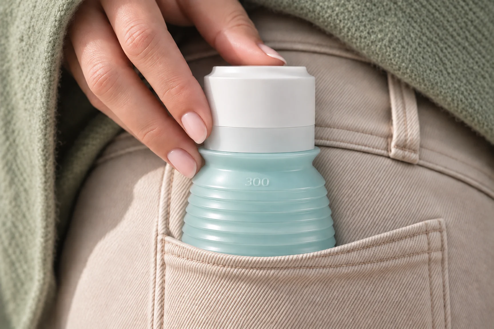
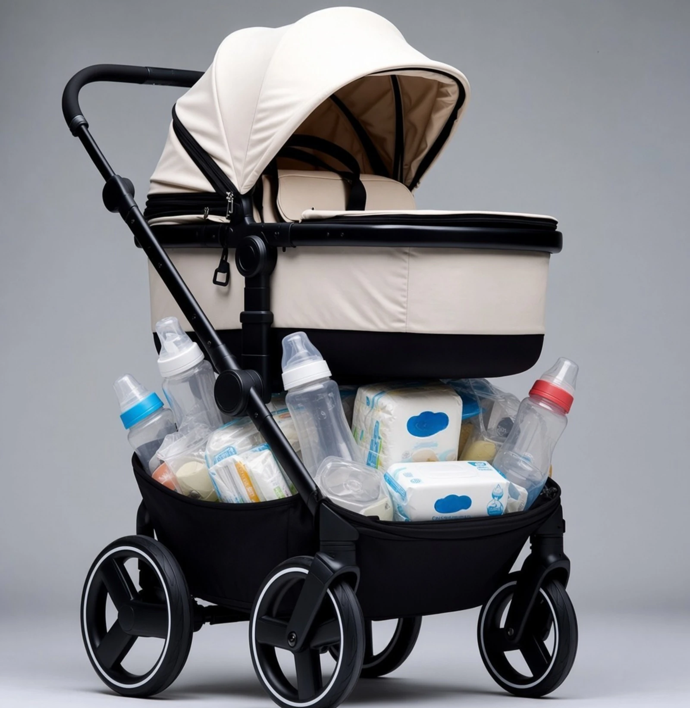
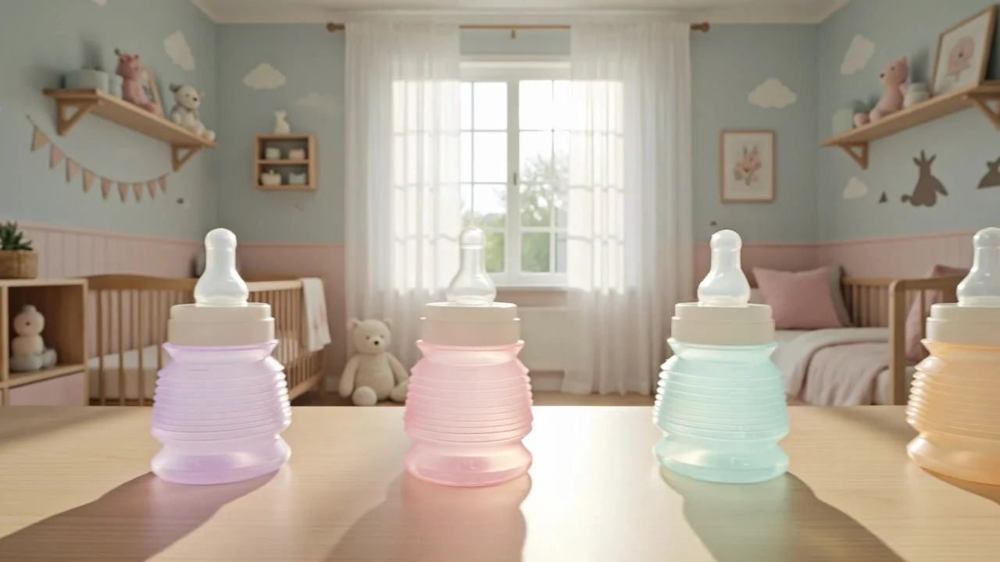

Fabriqué en France · 0 résidu détecté par le LNE
BIBEON, le biberon, l’R en moins®.
À partir de 35 €·livraison offerte·expédié de France le jour même
Le biberon, l’R en moins
Et toujours moins d’air.
Évolutif
Toutes les tailles.
150 ml
4 soufflets dépliés
Sans doseur
L’eau au moment du repas.

L’R en moins·Dedans
Moins d’air dans le biberon, moins d’air à avaler.

L’R en moins·Dans le sac de bébé
Moins d’air à transporter : quelques grammes, tétine comprise.

L’R en moins·Autour
Il a tout supprimé.
Moins d’air autour : tout est dans le biberon.
La boutique

Lin·Menthe·Rose·Lilas·Abricot
Livraison offerte·expédié de France le jour même·retour offert sous 30 jours
Nettoyage
Sa paroi est mobile : repliez-le, et le fond remonte à portée de doigt.

Composition & preuves
Un biberon n’est pas un jouet.
Alors nous avons voulu savoir.
Pas une promesse. Une preuve.
50 %
végétal
La bague et le capuchon : la moitié du poids du BIBEON est d’origine végétale. Sans OGM ni gluten.
Découvrir la composition
Polypropylène
le flacon
De qualité alimentaire, exempt de bisphénols. Testé par le LNE dans les cinq coloris.
Découvrir les matières
Silicone
alimentaire
La tétine. Non médical : le matériau est strictement agréé pour le contact alimentaire.
Alimentaire ou médical ?
0
résidu détecté
Les cinq coloris du corps, la bague et le capuchon ont été soumis aux essais de migration du LNE — le Laboratoire national de métrologie et d’essais, laboratoire de référence de l’État français. Résultats inférieurs au seuil analytique indiqué dans le rapport · dossier P143418.
Voir les résultats
France
fabriqué ici
Du moule au flacon, en région lyonnaise. Une exigence que l’on peut documenter.
Notre histoire
« Un biberon n’est pas un jouet. En l’absence d’AMM — d’autorisation de mise sur le marché — la conformité repose sur la responsabilité du fabricant, sa déclaration et les preuves qui l’étayent. J’ai voulu aller au bout de cette responsabilité. »
Garantie des matières
Aucun matériau médical, aucun silicone médical.
L’intégralité des composants de BIBEON provient de substances agréées au contact alimentaire — la règle que le LNE rappelle en note de son rapport, et celle qui a dicté le choix des trois matières.
Notre déclaration de conformité est publiée. Aucun fabricant de biberon ne la publie.
Silicone alimentaire ou médical ? La déclaration de conformité
Ce sont les parents qui le disent


Biberon idéal.« Très léger et facile à manipuler, même pour les petites mains. Ça prend très peu de place dans le sac. »
La révolution !« Je l’avais pour ma fille il y a 6 ans, et bien la révolution ! Il tient le coup, je le conseille. »
« Très bon ratio qualité-prix »·« Facile à nettoyer »·« On peut l’emmener partout »Amandine D. · Rochdi H. · Justine P. — ConsoBaby, 2025 et 2026
Avant de commander
Correctement fermé, BIBEON est hermétique — sans obturateur séparé. Le toit plat du capuchon enfonce la tétine dans sa base et bouche son orifice. La seule chose à vérifier : que la tétine soit descendue droite.
C’est la question que se posent la plupart des parents. Les témoignages vont dans le même sens : des enfants habitués à une seule marque depuis un an l’ont adoptée sans difficulté. Et la tétine, à col étroit, se remplace.
Comme un biberon ordinaire, et mieux : quatre pièces seulement, ni valve ni insert. S’il reste une particule, repliez les soufflets et le fond remonte à portée de doigt. Nettoyer, désinfecter, stériliser.
La tétine fournie est à débit « 6 mois ». BIBEON accompagne les bébés de la diversification jusqu’à environ 3 ans. Contenance : 330 ml déplié, gradué jusqu’à 300 ml.
En France, en région lyonnaise, du moule au flacon. Le corps, la bague et le capuchon ont passé les essais de migration du LNE : résultats inférieurs au seuil analytique du rapport. Les essais du LNE.
Livraison offerte, à domicile comme en point relais. Expédié de France le jour même. Retour offert sous 30 jours.
Notre histoire
Fabriqué en France, du moule au flacon, en région lyonnaise.

La boutique
À partir de 35 €·livraison offerte·retour offert sous 30 jours
Le biberon, l’R en moins®.
Une question sur le produit, une demande de revendeur, une commande en volume : appelez, on répond.